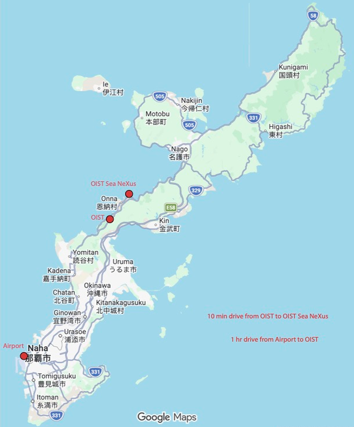

The bioblitz will be hosted at The New Zealand Marine Studies Centre.
185 Hatchery Road, Portobello, Dunedin 9014, New Zealand

No accommodation is available at the Marine Studies Centre. We have reserved some rooms at a holiday park in Dunedin, which is a half-hour commute. See our accommodation page for details. Alternatively there are smaller venues located nearby in Portobello, but these must be booked independently.
The marine science station has a kitchen for meal preparation. Some basic groceries and ingredients will be provided for people to make their own lunches, but each person is recommended to bring some money for personal food.
TBC